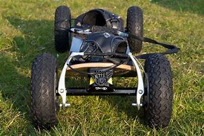

Los tipos de skates

El mountain board
Los MountainBoards, o monopatines 4×4, son también llamados Dirtboards, y son unos tipos de skate con ruedas muy grandes y algunas veces incluso con frenos. Suelen ser bastante grandes en general de tamaño.
Diseñados para ir fuera de pistas como montañas o caminos, y están diseñados para aprovechar los baches y la velocidad. Este tipo de skates se han usado para cosas súper interesantes, incluso para tirarse de una montaña abajo a modo de caída libre por camino.
Algunos mountainboards vienen con fijaciones y otros con ganchos, para atarlos a nuestros pies. Hay muchos estilos y marcas de estos skates.